flowchart LR A[raw pings] --> B[filter_stale_pings] B --> C[filter_impossible_speeds] C --> D[split_by_observation_gap] D --> E[split_by_stops] E --> F[filter_traffic_stops] F --> G[clean segmented trajectories]
Cleaning and segmenting truck GPS traces
Raw truck GPS streams arrive dirty:
The pipeline turns a noisy per-truck stream into clean, segmented trajectories.
flowchart LR A[raw pings] --> B[filter_stale_pings] B --> C[filter_impossible_speeds] C --> D[split_by_observation_gap] D --> E[split_by_stops] E --> F[filter_traffic_stops] F --> G[clean segmented trajectories]
Each stage is per-truck and independent across trucks.
| Stage | Drops rows | Adds column |
|---|---|---|
filter_stale_pings |
yes | — |
filter_impossible_speeds |
yes | — |
split_by_observation_gap |
(via min_length) |
segment_id |
split_by_stops |
(via min_length) |
segment_id, is_stop |
filter_traffic_stops |
no | (reclassifies is_stop) |
dt against the real prior row; they’d look like huge speeds, and speed would drop them for the wrong reason.is_stop labels that split_by_stops produces.filter_stale_pingsSome devices buffer readings and later re-emit an earlier record with only the timestamp advanced.
A sequence like T1 → T2 → T3 appears, where T3 has the same (lat, lon, speed, heading) as T1 but a later time.
Per truck, each row is compared bit-exactly against the last window distinct rows; matches are dropped.
Before — source (blue) and stale copy (red)
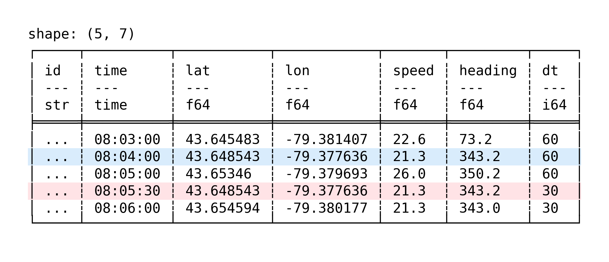
After — stale row dropped
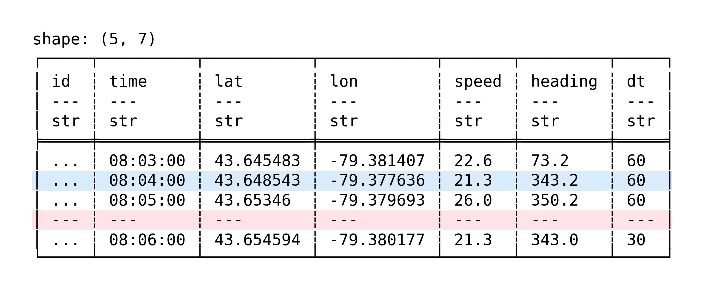
The 08:04:00 source and the 08:05:30 re-emission share (lat, lon, speed, heading) exactly. The intermediate 08:05:00 ping has different lat/lon, speed, and heading — that’s what a real subsequent observation looks like.
The filter’s only job is removing the duplicate; the rest passes through untouched.
Before — matcher loops the block · After — straight northbound, no detour
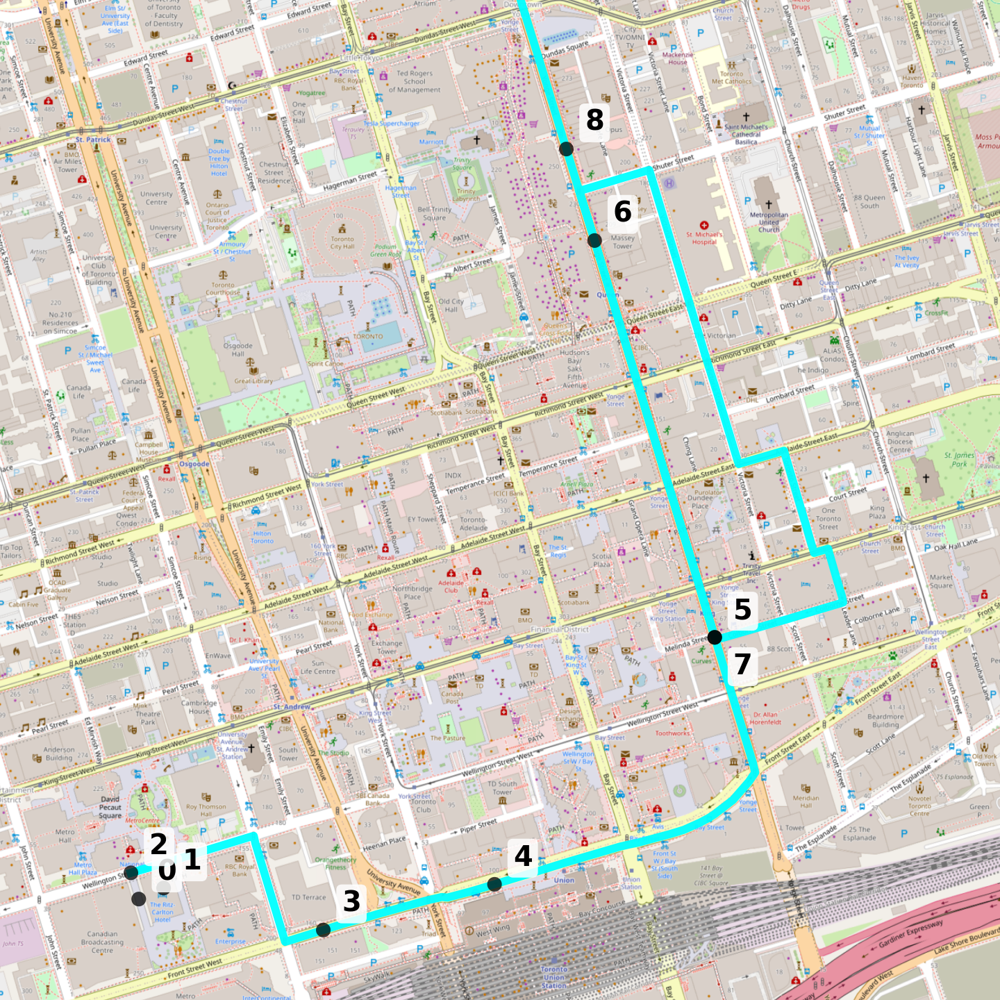
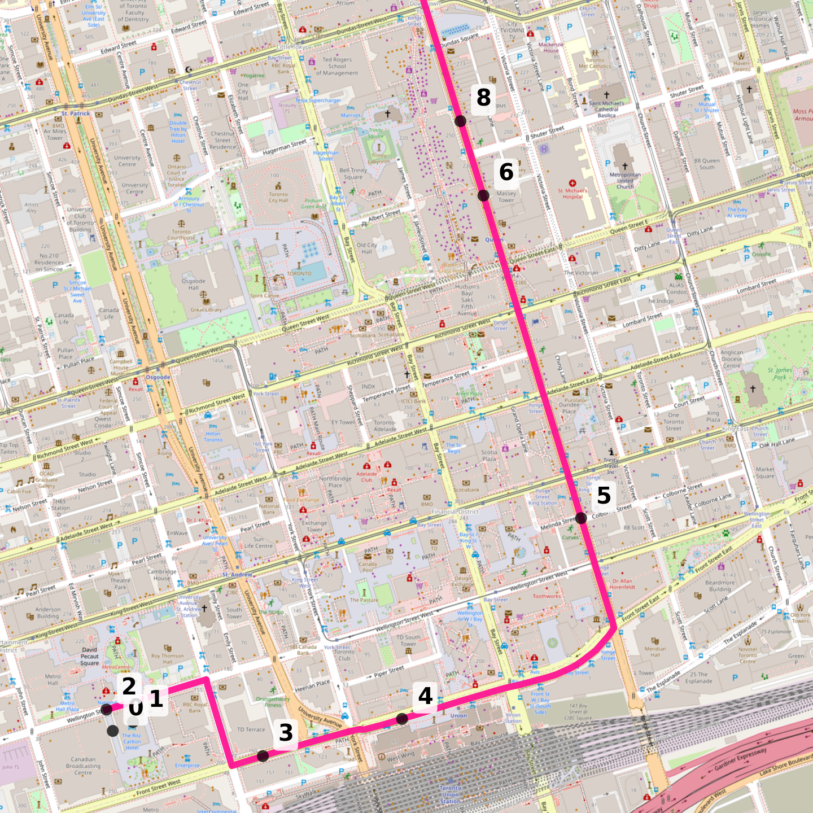
The route runs through downtown Toronto on a divided one-way arterial. The raw trace forces the matcher to revisit the source position — but each carriageway is a separate one-way OSM way, so the matcher detours east, south on the opposite-direction street, then west to rejoin.
With the stale row filtered out, the matcher routes straight northbound — no detour, no back-tracking.
window tradeoff — too small misses re-emissions of older records; too large risks dropping legitimate revisits to a prior location.speed == 0 exemption — a stopped truck legitimately emits many identical pings. Without this, a stationary row in the buffer would also spuriously flag a later moving ping that happens to pass through the same coords.(lat, lon, speed, heading) is compared. The re-emission’s timestamp can be any value later than the source.filter_impossible_speedsGPS glitches produce fixes that imply motion faster than any truck can move.
Per truck, sorted by (id, time). For each row, compute Haversine distance and dt against the last kept point — not the previous row. If the implied speed exceeds the threshold, drop the row and hold the anchor.
Threshold is on computed speed (distance ÷ time), not the device-reported speed column: glitched GPS often emits a self-consistently wrong reported speed.
Before — spike 5.5 km north · After — dropped
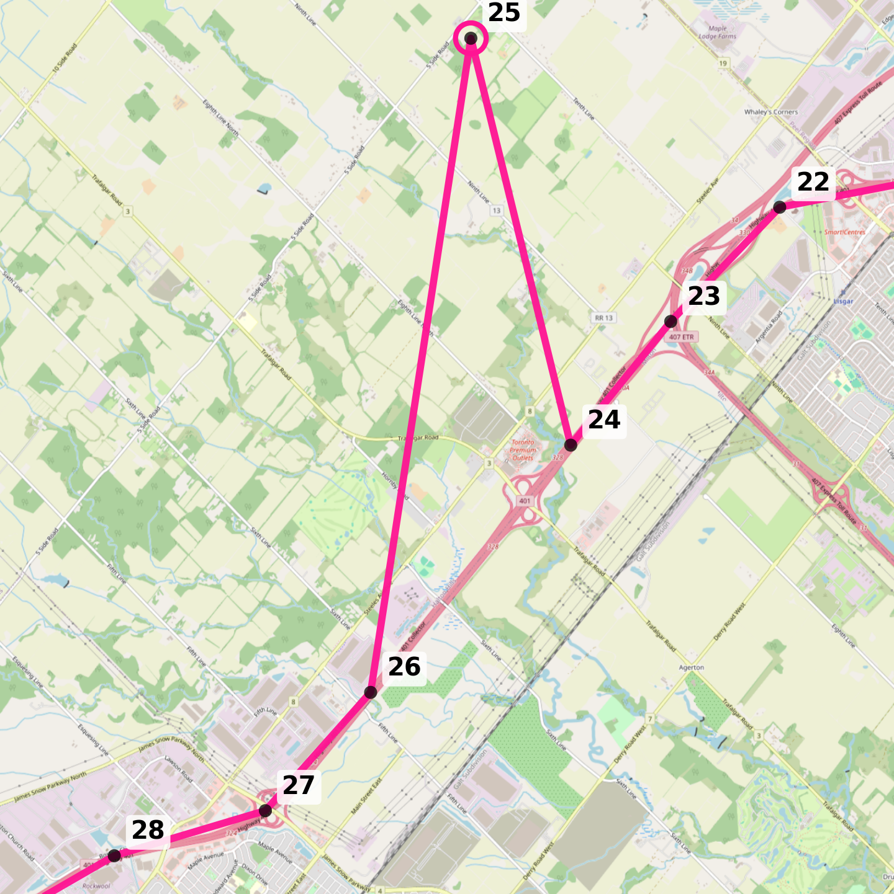
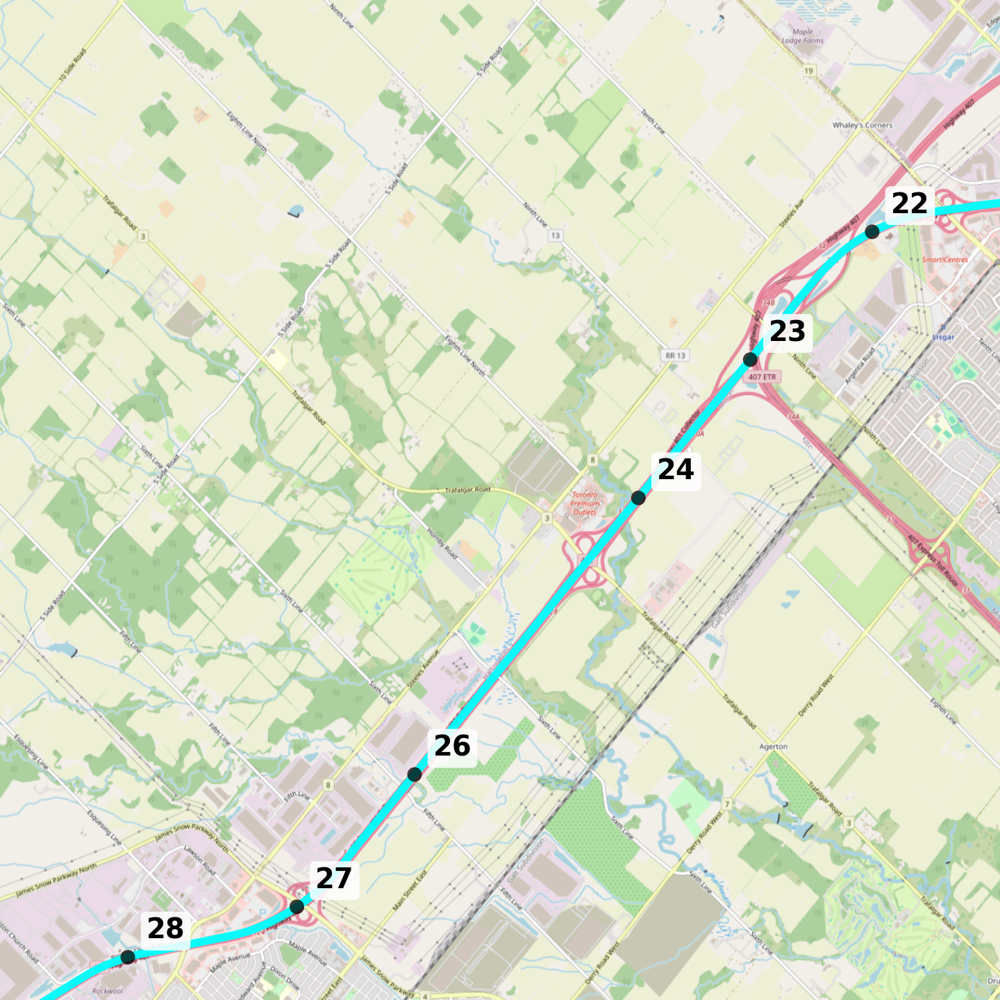
Truck cruising westbound on Highway 401 at 60-second cadence. Ping 25 lands ~5.5 km north of the corridor — that’s ~330 km/h of implied motion from its predecessor, well past the 200 km/h ceiling.
The matcher tries to honor the off-route fix and bends the route north to reach it. With the spike dropped, ping 26 is evaluated against ping 24 (the last kept anchor) and the route stays on 401.
max_speed_kmh — default 200. Converted internally to m/s.lat/lon/time can’t be evaluated, so the row survives and the next row still compares against the last clean fix.dt == 0 is safe — duplicate timestamps do not divide by zero; the row is kept.split_by_observation_gapA trajectory is only physically meaningful within a window of continuous observation. Yard dwells with the device shut off, privacy toggles, coverage holes — any of these leave a large dt between two otherwise-unremarkable pings.
Per truck, start a new segment_id whenever the time delta to the previous row exceeds gap.
Before — moving truck, dt jumps to 36060 s
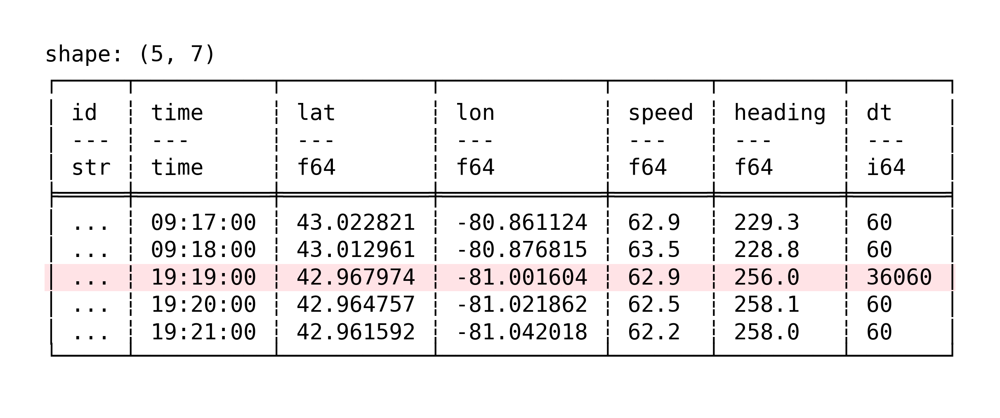
After — segment_id splits at the gap
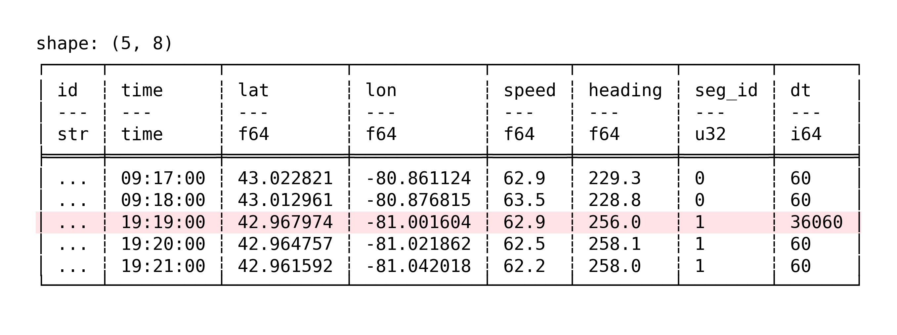
Truck cruising westbound at ~63 mph, heading around 256°. The device reports normally at 60-second cadence, goes dark for 10 hours, then resumes — further down the route, still moving. Every column looks like normal driving; only dt tells you anything happened. With a 2-minute threshold, the splitter inserts a new segment at the 36060-second row.
This is what makes the gap distinct from a stop: the pings aren’t clustered, speeds aren’t zero, headings aren’t frozen. A stop detector would see nothing; the gap splitter reads dt and segments.
Before — matcher invents a U-turn · After — split, two clean legs
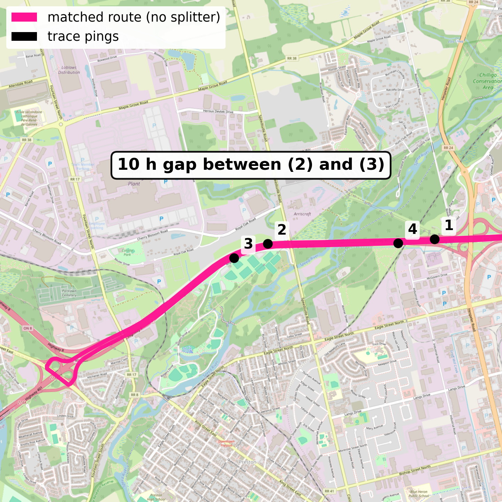
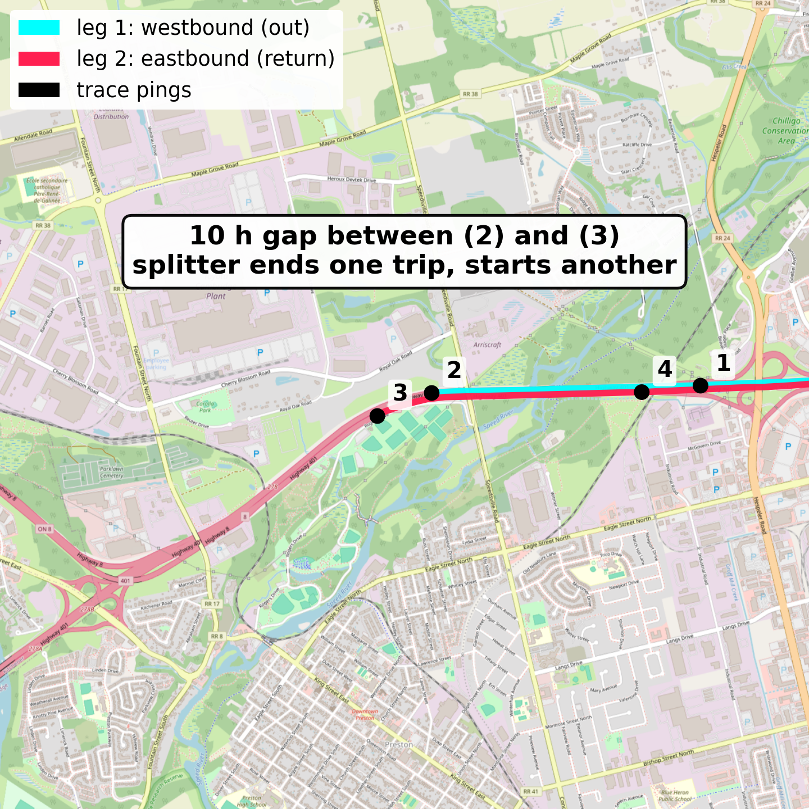
A → near-B → A out-and-back trip. The device fell silent on the WB carriageway at the Hespeler Rd interchange and resumed 10 hours later on the EB carriageway, ~370 m away.
Without splitting, the matcher has no clue this isn’t a continuous trip and invents a U-turn through the on/off ramps. Splitting first ends one trip at ping (2) and starts a new one at ping (3); both legs match cleanly along their own carriageway.
gap: timedelta — the only tuning knob for segmentation.min_length — drops whole segments shorter than N rows. Set aggressively and the output can be empty; in the test suite, min_length=20 on 15-row segments drops everything.lat / lon. A truck that drove 500 km during a dropout and a truck that sat still are treated identically; only the time delta matters.split_by_stopsTrucks idle: loading docks, rest breaks, driver swaps. A “stop” is a window of pings that stays inside a small diameter for long enough.
Within a truck, find maximal windows where all pings fit inside max_diameter and span at least min_duration. Label them is_stop = true; label everything else as movement.
Segments alternate movement → stop → movement.
Before — pings stack on the Petro Canada lot · After — dwell flagged
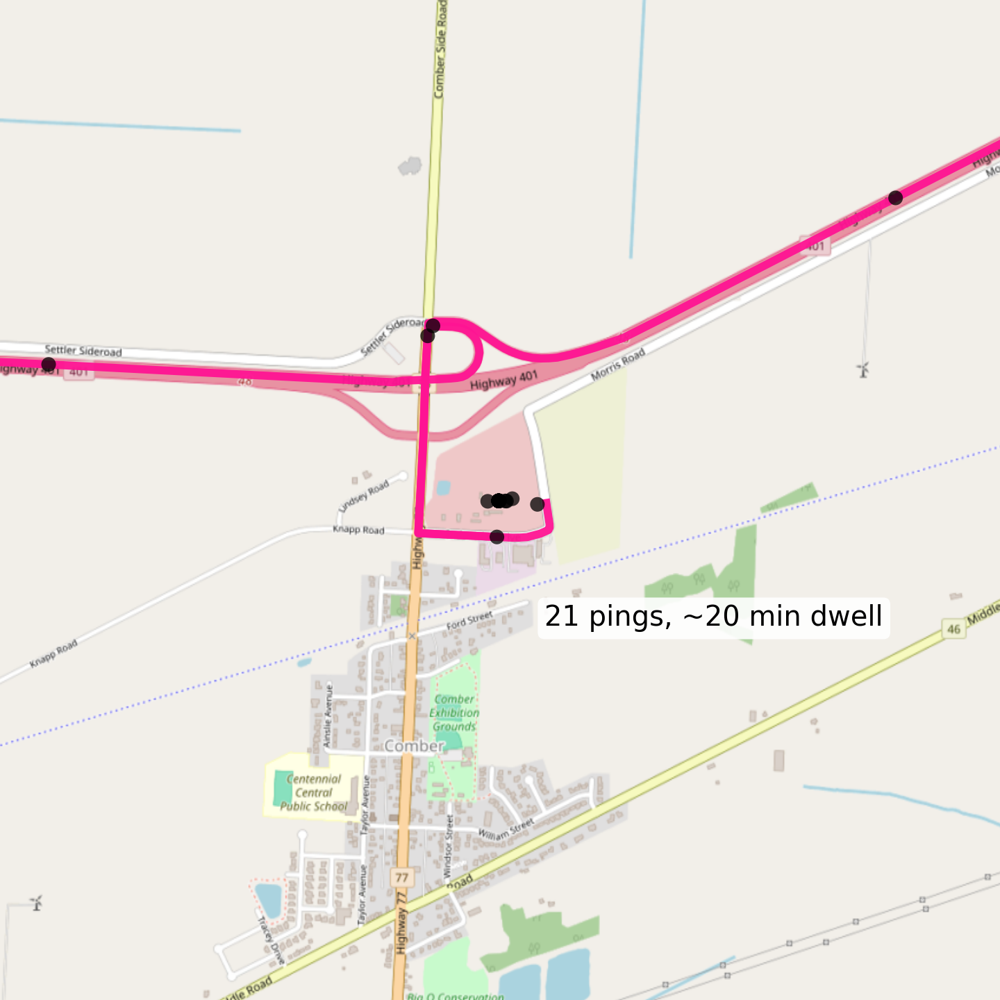
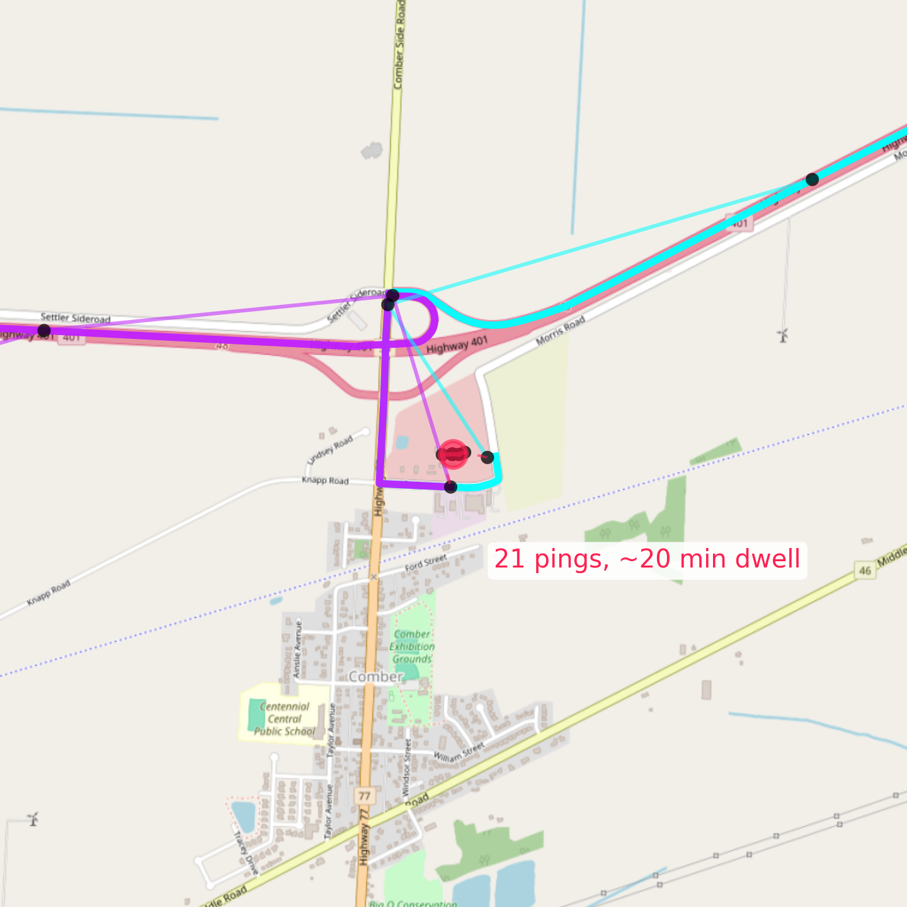
Truck pulls off Highway 401 westbound at the Comber Petro Canada, parks for 15 minutes, then re-enters 401 westbound. The detector finds the cluster: 16 pings inside a 50 m diameter spanning ~15 minutes.
One segment_id per phase (approach / dwell / departure), is_stop true on the middle segment. All rows preserved — rows are never dropped by the stop detector itself.
max_diameter (m) — maximum spatial extent for a window to count as stopped.min_duration — minimum temporal span. Both must hold simultaneously.min_length is asymmetric — drops short movement segments but keeps stop segments regardless. A 10-row movement segment vanishes at min_length=15; a 6-row stop survives.max_diameter=100_000 m with min_duration=24 h finds nothing in a normal day’s trace.filter_traffic_stopsNot every detected stop is a real stop. Trucks also halt at red lights, in congestion, and behind queued traffic — all on the road corridor they were already following.
For each stop segment, compute the approach bearing (points before the stop) and the departure bearing (points after). If the angular change is below max_angle_change, the truck stayed on the same corridor — reclassify the stop as movement and merge segments.
Before — blue leg / orange ring / orange leg · After — single continuous blue, no break
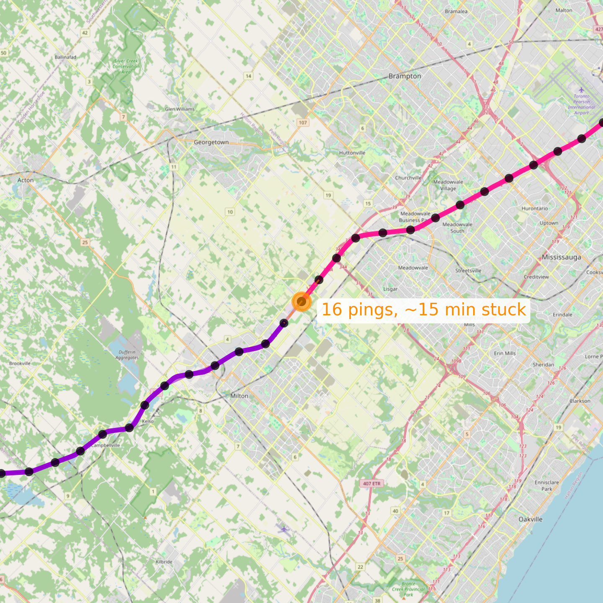
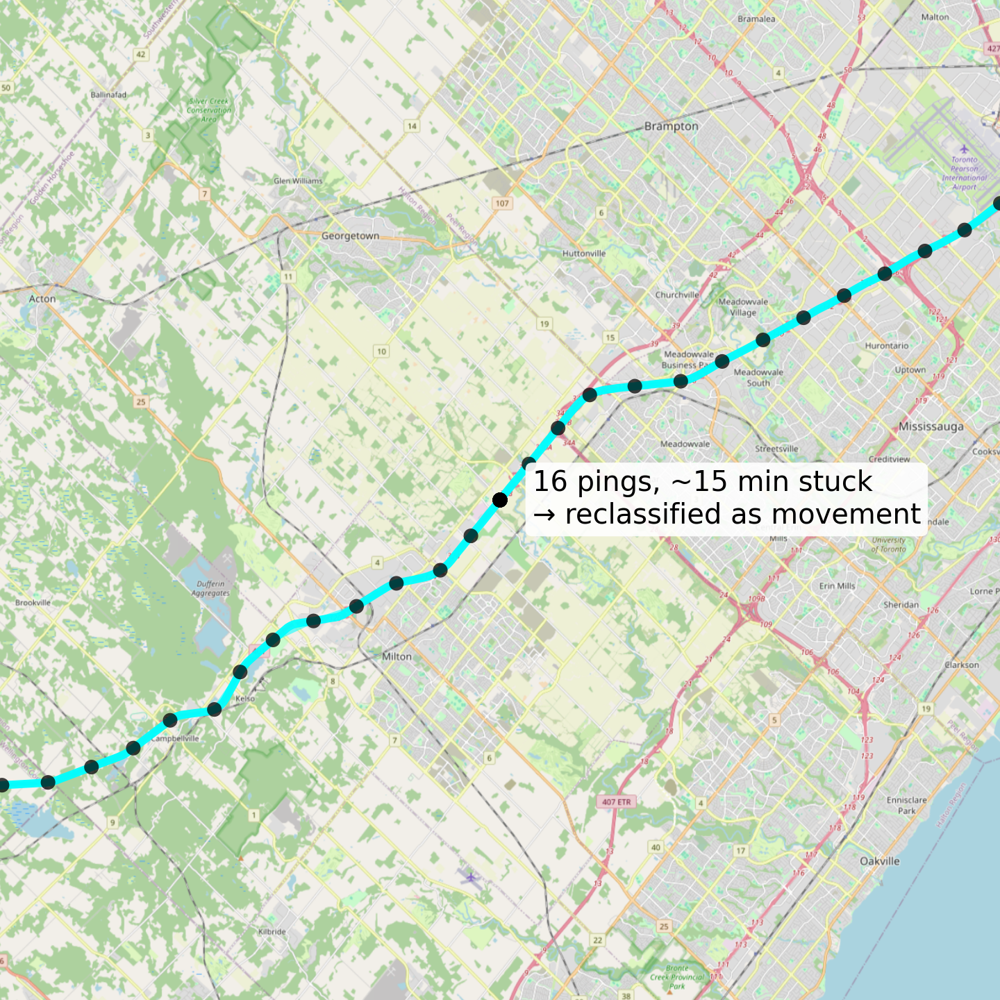
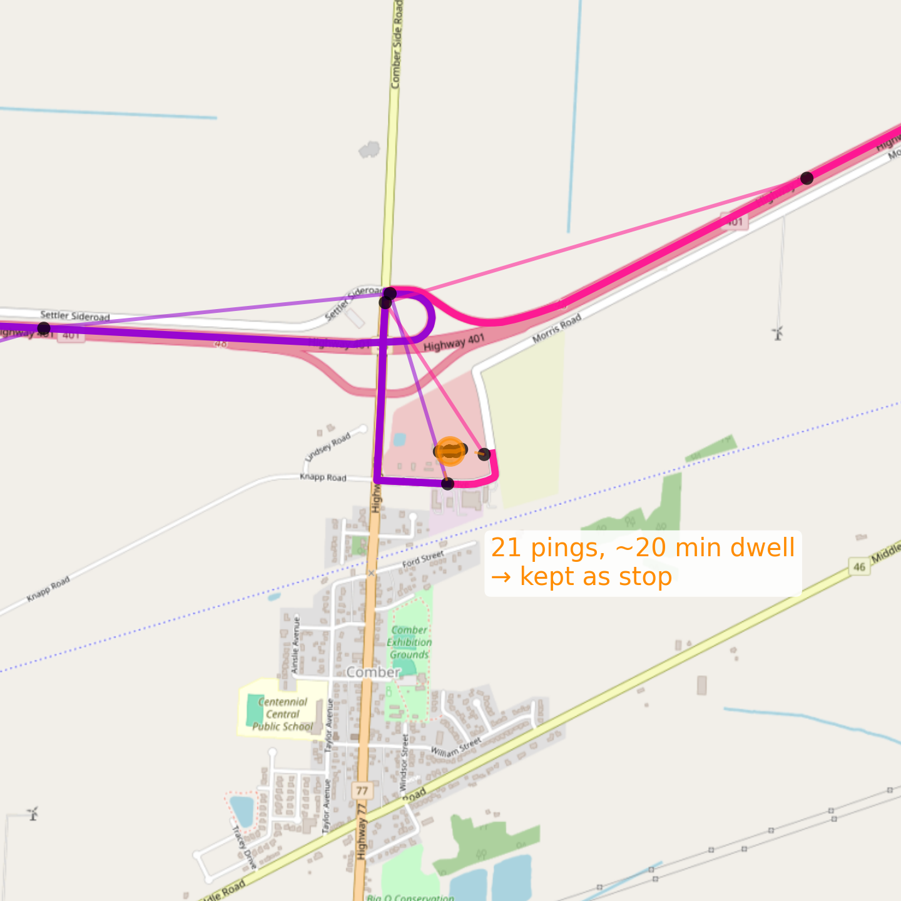
The Comber Petro Canada dwell from the previous slide. Same shape (cluster of pings, >2 min, <50 m), but the truck approaches from 401 and leaves at a sharp angle onto the driveway. Bearing change ≈ 90°, above threshold. Stop survives.
split_by_stops output schema — expects segment_id and is_stop. Hard dependency.max_angle_change (degrees) — default 30. Lower = stricter (more stops kept); higher = more reclassification.min_distance (m) — minimum separation between point pairs used for bearing computation. Filters GPS jitter out of an otherwise noisy bearing signal.heading — device heading can freeze or lag; positions are ground truth.